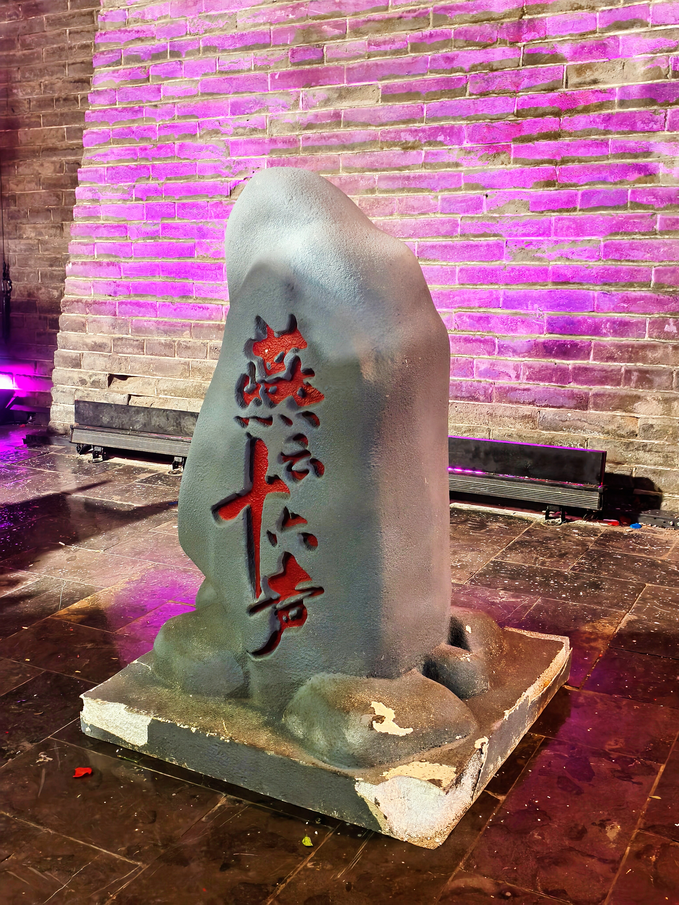

研究问题
团队围绕文化吸引力、语境理解、传播障碍、文化传播机制四个问题展开研究，重点关注海外玩家如何理解中式建筑、武侠武学、非遗技艺、古典音律与历史叙事。
“感知中国，世界同行”社会实践项目
这是一场由中外青年共同完成的数字文化田野实践。团队以《燕云十六声》为核心案例， 结合线上社群观察、问卷调研、深度访谈与开封实地溯源，追踪中国文化如何在数字媒介中被看见、被理解、被主动探索。

项目定位
团队围绕文化吸引力、语境理解、传播障碍、文化传播机制四个问题展开研究，重点关注海外玩家如何理解中式建筑、武侠武学、非遗技艺、古典音律与历史叙事。
研究采用三角互证法，结合问卷调查、数字民族志、深度访谈与实地考察，形成“线上观察 - 虚实对比 - 成果转化”的完整研究链条。
项目不仅为数字文化出海提供面向企业与文旅场景的优化参考，也让中外学生在协作中共同完成文化阐释、公共传播与田野记录。
项目叙事
2026年1月，团队完成中英文问卷初稿、访谈提纲和海内外社交媒体矩阵搭建，由中国学生负责文化阐释，国际学生负责跨文化视角与海外社群进入。
团队进入 Reddit、Discord、Steam 等社群持续观察 4 周，回收 32 份有效问卷，覆盖 12 个国家和地区，并完成 5 位典型玩家的半结构化深度访谈。
2026年2月24日至27日，团队走进清明上河园、万岁山武侠城、州桥遗址等地，采集“游戏场景 - 真实原型 - 玩家感受”三组一手材料，强化虚实对照。
最终形成结项报告、系列视频、新闻稿和推文视频等传播成果，把研究洞察转译成更容易被公众理解和接收的表达形式。
调研发现
65.63% 的玩家最关注中式建筑，68.75% 的玩家对历史场景还原表示满意。樊楼、《清明上河图》与宋代市井空间的数字化重建，构成了最直观的审美吸引力。
非遗元素的理解难度显著低于深层文化符号。皮影戏、打铁花、投壶等设计把“观看文化”转化为“参与文化”，让抽象概念更容易被接住。
“麻布袋”“盈盈”等角色故事让海外玩家在普世情感中理解“侠义”。68.75% 的玩家在游玩后对侠义精神的认知得到提升。
78.13% 的玩家对古典音乐与诗词融入表示满意。秦腔《望西都》、樊楼《春江花月夜》等视听场景，构成了最强情感记忆点。
现场采样

成果转化
团队制作结项视频 1 条、其他视频 6 条以上，并在抖音、TikTok、Instagram、Facebook 等平台持续发布内容，累计点赞量超七千次，海外平台点赞量占比约为 1 : 7.29。
团队撰写 3 篇新闻稿，其中 1 篇获中华网转载。新闻稿与短视频配合，让学术观察转化为大众可接收、可分享、可复用的公共表达。
项目揭示了数字游戏在中华文化国际传播中的四重转译机制，也为游戏开发者、文旅部门和青年跨文化传播实践提供了可操作的参考路径。
“风起之处，亦是相逢之时。”
从虚拟世界走向真实开封，这次实践证明，文化认知可以被数字媒介点亮，也能被现实空间接住。视频成果
结项主视频融合游戏画面、玩家访谈与开封实拍素材，是整套研究成果最完整的可视化表达。现在支持在页面内直接加载与播放。
集中展示游戏意象与现实文化景观的互文关系。
面向轻传播场景的短内容，适合社交平台快速触达。
通过中外青年联合出镜，把“游戏文化出海”讲给更广的受众。
资料入口